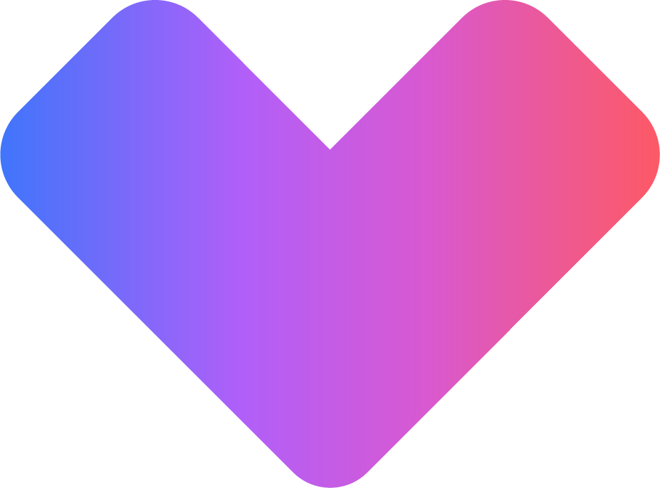

TECHNICAL REPORT
○○ 과제 수행 결과 보고
부제 — 과제의 한 줄 요약을 여기에 적습니다
DATE
2026. 07. 31.
DEPT.
NC AI ○○○팀
AUTHOR
홍길동
AGENDA
목차
01
과제 개요
배경 · 목표 · 범위
04
시스템 구성 및 프로세스
아키텍처 · 처리 흐름
02
추진 실적
정량 성과 지표 · 마일스톤
05
검증 결과
규격 비교 · 개선 전후 · 데모
03
일정 계획
연간 추진 일정
06
리스크 및 향후 계획
이슈 대응 · Next steps
○○ 과제 · 2026. 07. 31.
02
01
과제 개요
과제를 왜 시작했고, 무엇을 어디까지 하기로 했는지 정리합니다.
01 과제 개요
02 추진 실적
03 일정 계획
04 시스템 구성
05 검증 결과
06 리스크 · 향후 계획
OVERVIEW
과제 개요
배경 · 목표 · 범위
BACKGROUND
배경
현재 상황과 문제 정의를 두 문장으로 적습니다. 수치가 있으면 함께 넣습니다.
OBJECTIVE
목표
달성하려는 상태를 측정 가능한 형태로 적습니다. 예) 처리 시간 40% 단축.
SCOPE
범위
포함 범위와 제외 범위를 나눠 적습니다. 제외 범위를 반드시 남깁니다.
수행 기간
2026.01 – 2026.12
투입 인력
○명 (○ MM)
협업 조직
○○팀 · ○○팀
진행률
68%
○○ 과제 · 2026. 07. 31.
04
KEY RESULTS
정량 성과 지표
2026년 상반기 기준 · 목표 대비 달성률
처리 정확도
94.2
%
▲ 6.4%p
목표 90%
평균 응답 시간
1.8
초
▼ 42%
목표 2.0초
적용 라인 수
12
개
+5개
목표 15개
운영 비용 절감
3.4
억 원
목표 미달
목표 5억 원
해석
지표별로 한 줄씩, 숫자가 왜 그렇게 나왔는지 원인을 적습니다. 미달 지표는 반드시 원인과 대응을 함께 적습니다.
산출 기준 · 집계 기간 · 데이터 출처를 여기에 명시
○○ 과제 · 2026. 07. 31.
05
MILESTONES
마일스톤 타임라인
5개 단계 · 현재 3단계 진행 중
2026.02
기획 · 요구 정의
완료
2026.04
프로토타입
완료
2026.07
1차 현장 검증
진행 중
2026.10
양산 적용
예정
2026.12
과제 종료 보고
예정
직전 보고 이후 완료
프로토타입 검증 완료, 데이터 파이프라인 이관
현재 집중 사항
현장 3개 라인 파일럿, 실사용 로그 수집
다음 보고까지
양산 적용 판단 기준 확정, 운영 인수 계획 수립
○○ 과제 · 2026. 07. 31.
06
SCHEDULE
연간 추진 일정
2026년 · 굵은 선이 현재 시점
과제 활동
1월
2월
3월
4월
5월
6월
7월
8월
9월
10월
11월
12월
요구사항 정의
데이터 구축 · 전처리
모델 개발 · 튜닝
현장 파일럿 검증
양산 적용 · 이관
결과 보고 · 문서화
현재
완료
진행 중
예정
○○ 과제 · 2026. 07. 31.
07
04
시스템 구성 및 프로세스
무엇을 어떻게 만들었는지, 구성도와 처리 흐름으로 설명합니다.
01 과제 개요
02 추진 실적
03 일정 계획
04 시스템 구성
05 검증 결과
06 리스크 · 향후 계획
ARCHITECTURE
시스템 구성도
진한 블록이 이번 과제 개발 범위
LAYER 1
사용자 접점
차량 단말
모바일 앱
관제 웹
외부 API
LAYER 2
서비스 로직
요청 오케스트레이터
라우팅 · 세션 관리
추론 엔진
모델 서빙 · 후처리
콘텐츠 관리
규칙 · 템플릿 · 검수
LAYER 3
데이터 · 인프라
운영 DB
로그 · 모니터링
학습 데이터셋
GPU 클러스터
구성도 아래 한 줄 — 이 구조에서 가장 중요한 설계 결정 하나를 적습니다.
○○ 과제 · 2026. 07. 31.
09
PROCESS FLOW
처리 프로세스
입력에서 결과 반영까지 5단계
STEP 01
입력 수집
센서 · 사용자 발화 · 외부 데이터
›
STEP 02
전처리 · 검증
정규화, 결측 처리, 유효성 검사
›
STEP 03
추론 · 판단
모델 추론 후 규칙 기반 보정
›
STEP 04
결과 생성
응답 조립, 안전 필터 통과
›
STEP 05
반영 · 피드백
사용자 반응 로깅 후 재학습
산출물
원천 데이터 로그
산출물
정제 데이터셋
산출물
판단 결과 · 신뢰도
산출물
최종 응답
산출물
개선 백로그
병목 구간과 실패 시 처리(fallback)를 여기에 한 줄로 적습니다.
○○ 과제 · 2026. 07. 31.
10
SPECIFICATION
규격 · 대안 비교
채택안은 가운데 열
항목
대안 A
채택안 B
대안 C
처리 성능
1,200 req/s
2,400 req/s
900 req/s
지연 시간
평균 3.1초
평균 1.8초
평균 2.6초
구축 비용
낮음
중간
높음
확장성
제한적
수평 확장 가능
수평 확장 가능
운영 난이도
쉬움
보통
어려움
채택 근거
비용 대비 성능이 가장 안정적이며, 기존 운영 체계를 그대로 쓸 수 있습니다.
○○ 과제 · 2026. 07. 31.
11
BEFORE / AFTER
개선 전 · 후 비교
동일 조건 · 동일 지표 기준
BEFORE
기존 방식
작업 소요 시간
120분
오류율
7.8%
투입 인력
4명
수작업 검수에 의존해 담당자별 편차가 컸습니다.
AFTER
개선 후
작업 소요 시간
42분
−65%
오류율
1.2%
−6.6%p
투입 인력
2명
−2명
자동 분류 후 예외 건만 사람이 확인하는 구조로 바꿨습니다.
○○ 과제 · 2026. 07. 31.
12
DEMO
화면 · 데모 캡처
실제 동작 화면 · 2026.07 빌드
캡처 설명
무엇을 보여 주는 화면인지, 어디를 봐야 하는지 한 줄로 적습니다.
○○ 과제 · 2026. 07. 31.
13
RISK & ISSUE
리스크 및 대응 방안
영향도 순 · 담당과 기한 명시
영향도
이슈 내용
대응 방안
담당 · 기한
높음
현장 데이터 확보 지연으로 검증 일정 압박
기존 로그로 선행 검증, 확보 즉시 재평가
○○팀 · 8/15
높음
GPU 자원 경합으로 학습 처리량 감소
야간 배치 전환, 우선순위 큐 분리
○○팀 · 8/30
중간
운영 인수 인력 미확정
인수 범위 문서화 후 인력 요청 상신
○○팀 · 9/12
낮음
외부 API 요금 정책 변경 가능성
대체 공급사 후보 2곳 사전 검토
○○팀 · 10/04
의사결정 요청
이번 보고에서 결정이 필요한 사항 한 건만 적습니다.
○○ 과제 · 2026. 07. 31.
14
WRAP-UP
요약 및 향후 계획
요약
01
핵심 성과를 한 문장으로 적습니다.
02
목표 대비 진척과 남은 과제를 적습니다.
03
확인된 리스크와 대응 방향을 적습니다.
Next steps
현장 파일럿 확대 (3 → 6라인)
8월
양산 적용 기준 확정
9월
운영 인수 · 교육
10월
과제 종료 보고
12월
요청 사항
필요한 지원(인력 · 예산 · 의사결정)을 구체적으로 적습니다.
○○ 과제 · 2026. 07. 31.
15
Q & A
감사합니다
문의 · 담당자 연락처를 적습니다